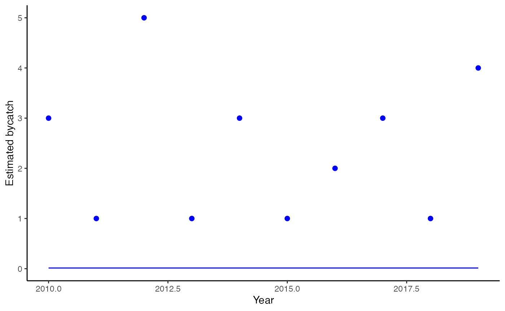
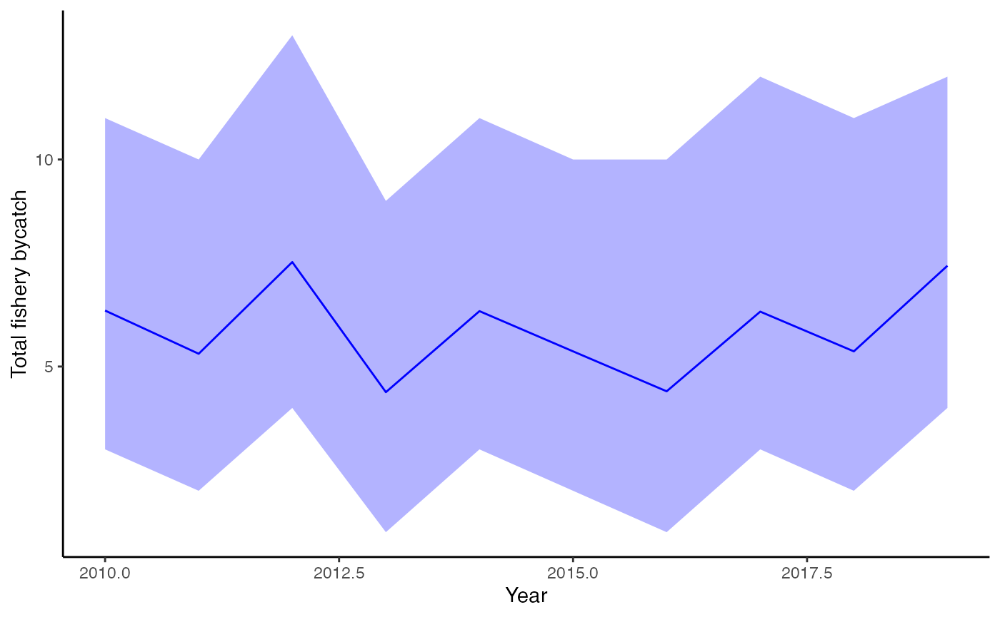

Overview
In many fisheries, bycatch is monitored through multiple independent data streams. For example:
- Observer-only coverage: Traditional human observers on vessels
- Electronic Monitoring (EM) only: Video monitoring without observers
- Both Observer and EM: Vessels with both monitoring types simultaneously
The bycatch package supports multi-stream monitoring,
where data from different monitoring programs are kept separate in the
statistical model but share the same underlying bycatch rate. The
detection rate of each stream is currently assumed to be 100%, allowing
each stream to be added as a new likelihood component.
In the special cases where the family is Poisson, data from different streams may be summed into a single stream (but for interpretation, keeping these separate may be easier).
Simple two-stream example
Let’s start with a basic example where we have both observer and EM coverage:
# Create example data with two monitoring streams
d <- data.frame(
Year = 2010:2019,
# Observer stream
Takes_obs = c(2, 1, 3, 0, 2, 1, 0, 2, 1, 3),
Sets_obs = rep(100, 10), # 100 sets observed
# EM stream
Takes_em = c(1, 0, 2, 1, 1, 0, 2, 1, 0, 1),
Sets_em = rep(80, 10), # 80 sets monitored by EM
# Total fishery effort
Sets_total = rep(500, 10) # 500 total sets per year
)Fitting a multi-stream model
To activate multi-stream mode, provide column names for the additional monitoring streams:
fit <- fit_bycatch(
Takes_obs ~ 1, # Formula uses the observer stream
data = d,
time = "Year",
effort = "Sets_obs", # Observer effort
takes_em = "Takes_em", # EM takes (activates multi-stream)
effort_em = "Sets_em", # EM effort
effort_total = "Sets_total", # Required for expansion
family = "poisson",
time_varying = FALSE
)The function automatically detects multi-stream mode and should display:
Observer stream: 10 observations
Total takes: 16
Total effort: 1000
EM stream: 10 observations
Total takes: 9
Total effort: 800
Total fishery effort: 5000
Observed effort: 1800
Unobserved effort: 3200Plotting results
The plotting functions work the same way:
plot_fitted(fit, xlab = "Year", ylab = "Estimated bycatch", include_points = TRUE)
Estimated bycatch from multi-stream model
plot_expanded(fit, xlab = "Year", ylab = "Total fishery bycatch")
Expanded bycatch estimates (total fishery)
Stream-specific summaries
Get detailed summaries by monitoring stream:
stream_summary <- get_stream_summary(fit)
print(stream_summary)## stream effort observed_takes estimated_mean estimated_low
## 1 Observer 1000 15 15.00000 NA
## 2 EM 800 9 9.00000 NA
## 3 Pooled Observed 1800 24 24.00000 NA
## 4 Unobserved 3200 NA 43.79867 24
## 5 Total Fishery 5000 NA 67.79867 48
## estimated_high coverage_pct
## 1 NA 20
## 2 NA 16
## 3 NA 36
## 4 68 64
## 5 92 100This table shows: - Takes and effort for each stream (Observer, EM, Pooled) - Coverage percentages - Estimated total bycatch with credible intervals
Three-stream example
You can also include a third stream for vessels with both Observer and EM:
d3 <- data.frame(
Year = 2010:2019,
# Observer-only stream
Takes_obs = c(2, 1, 3, 0, 2, 1, 0, 2, 1, 3),
Sets_obs = rep(80, 10),
# EM-only stream
Takes_em = c(1, 0, 2, 1, 1, 0, 2, 1, 0, 1),
Sets_em = rep(70, 10),
# Both Observer and EM
Takes_both = c(1, 1, 0, 1, 0, 1, 1, 0, 1, 0),
Sets_both = rep(50, 10),
# Total fishery effort
Sets_total = rep(500, 10)
)
fit3 <- fit_bycatch(
Takes_obs ~ 1,
data = d3,
time = "Year",
effort = "Sets_obs",
takes_em = "Takes_em",
effort_em = "Sets_em",
takes_both = "Takes_both", # Third stream
effort_both = "Sets_both",
effort_total = "Sets_total",
family = "poisson",
time_varying = FALSE
)Comparing to pooled data
You can verify that multi-stream gives similar results to pooling:
# Manually pool the data
d_pooled <- d
d_pooled$Takes_pooled <- d$Takes_obs + d$Takes_em
d_pooled$Sets_pooled <- d$Sets_obs + d$Sets_em
# Fit pooled model
fit_pooled <- fit_bycatch(
Takes_pooled ~ 1,
data = d_pooled,
time = "Year",
effort = "Sets_pooled",
family = "poisson",
time_varying = FALSE
)Extract and compare the estimated rates:
# Multi-stream: lambda_base is rate per unit effort
lambda_multi <- rstan::extract(fit$fitted_model, "lambda_base")$lambda_base
rate_multi <- mean(lambda_multi)
# Single-stream: lambda is expected count, divide by effort
lambda_pooled <- rstan::extract(fit_pooled$fitted_model, "lambda")$lambda
rate_pooled <- mean(lambda_pooled[, 1]) / d_pooled$Sets_pooled[1]
cat("Multi-stream rate:", round(rate_multi, 4), "\n")## Multi-stream rate: 0.0137## Pooled rate: 0.0138The rates should be very similar, confirming that multi-stream mode properly pools information across streams.
Different distributions
Multi-stream mode works with all distribution families:
# Negative Binomial
fit_nb <- fit_bycatch(Takes_obs ~ 1, data = d, time = "Year",
effort = "Sets_obs", takes_em = "Takes_em", effort_em = "Sets_em",
effort_total = "Sets_total", family = "nbinom2", time_varying = FALSE)
# Hurdle Poisson
fit_hurdle <- fit_bycatch(Takes_obs ~ 1, data = d, time = "Year",
effort = "Sets_obs", takes_em = "Takes_em", effort_em = "Sets_em",
effort_total = "Sets_total", family = "poisson-hurdle", time_varying = FALSE)Adding covariates
Covariates work the same way as in single-stream mode:
# Add a regulatory change covariate
d$Regulation <- ifelse(d$Year < 2015, 0, 1)
fit_cov <- fit_bycatch(
Takes_obs ~ Regulation,
data = d,
time = "Year",
effort = "Sets_obs",
takes_em = "Takes_em",
effort_em = "Sets_em",
effort_total = "Sets_total",
family = "poisson",
time_varying = FALSE
)
# Extract covariate effects
betas <- rstan::extract(fit_cov$fitted_model)$beta
# beta[,1] = intercept, beta[,2] = Regulation effectTime-varying effects
You can combine multi-stream with time-varying effects:
fit_tv <- fit_bycatch(
Takes_obs ~ 1,
data = d,
time = "Year",
effort = "Sets_obs",
takes_em = "Takes_em",
effort_em = "Sets_em",
effort_total = "Sets_total",
family = "poisson",
time_varying = TRUE # Enable time-varying effects
)